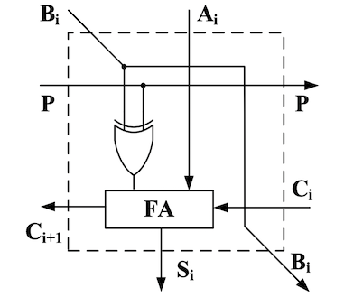
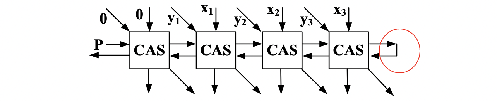

定点数的除法
原码除法
两个数相除，商的符号可由被除数和除数的符号位异或而得（相加也可以），因此我们只需考虑2个绝对值的原码如何进行相除？
首先我们来模仿十进制除法手算的过程：

可见，商的每一位不是0就是1，因此每一次上商，都相当于进行了一次减法：剩余的被除数 - 除数，如果够减，则商1；如果不够减，则商0。因此在计算机中，可以用减法来实现除法。
恢复余数法
人会心算，一看就知道够不够减，但机器却不会，必须先执行减法（即加）：
- 若差为正，才知道够减，则商1，此时的差即余数
- 若差为负，才知道不够减，但此时减法已经执行了，为恢复原来的被减数（原来的余数），就需要再给差（此时的余数）加回减数（除数）
为便于计算机的操作，将除数右移改为余数左移，效果是一样的。
如果当检测到余数的符号位为1时，就进行“恢复”操作，那么显然会造成错误，因为将余数左移时也很有可能将符号位变成1。为解决这个问题，在恢复余数法中应采用双符号位，如此最高符号位总是反映着余数的正确符号，即使余数左移了一位也仍是如此。
因为2个正原码相减，一定不会溢出，因此相减结果的2个符号位总是相同的。左移一位，最高符号位的值仍不变。

加减交替法
恢复余数法中，设某次余数为 ，
- 若 ，则左移后再减去除数，得：
- 若 ，则先恢复余数：，再左移、减去除数，得：
加减交替法则采用了一种不同的思路：
- 若 ，则左移后再减去除数，得：
- 若 ，则仍进行左移，之后再加上除数，得：
可见两种方法其实是等效的，不过在加减交替法中，余数总是直接左移，因此逻辑更加简洁，更适于电路设计。
另外加减交替法中，每次是“+除数”还是“-除数”，取决于余数的正负。而因为余数总数先左移一位，为避免移位改变了余数的符号位，因此加减交替法中也应采用双符号位。如此只需根据余数的最高符号位即可正确判断出“+除数”还是“-除数”。

注意：不要忘了此时得到的余数是经过 次左移后得到的，因此真正的余数为：
除法器
可控加/减法单元
可控加/减法单元（CAS）由一个全加器和一个异或门构成，有4个输入端和4个输出端。

其实本质上就是**对全加器的一个输入端添加了控制： → 。**多增加的管脚提高了该逻辑单元的复用性。
将若干个CAS连接起来，即可实现行波进位加法器/减法器：设 ，，

-
当 时，该电路的功能为：求 。
-
当 时，该电路的功能为：求（即：）。
此时若最高进位为 ，则说明 ，够减；最高进位若为0，则说明不够减。
基于加减交替法的阵列除法器

由于是2个正数相除，因此第一次进行的一定是减法。
- 若最高进位为 ，说明够减，余数左移后，再进行减法，差作为新的余数。
- 若最高进位为 ，说明不够减，余数左移后，再进行加法，和作为新的余数。
可见最高进位有2方面的作用：①本位的商，②下一步加减的控制。
对于 位原码 除以 位原码（包含符号位），所需的CAS数目为：，总延迟时间为：